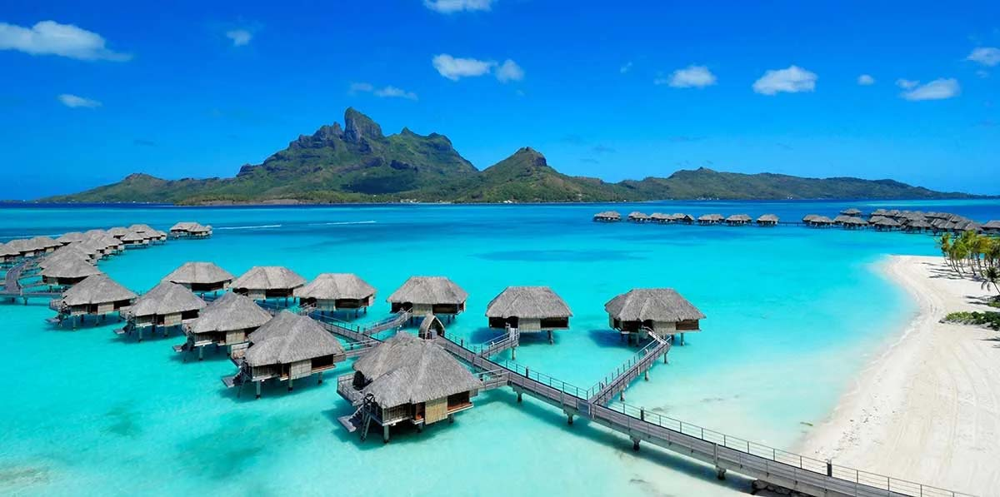
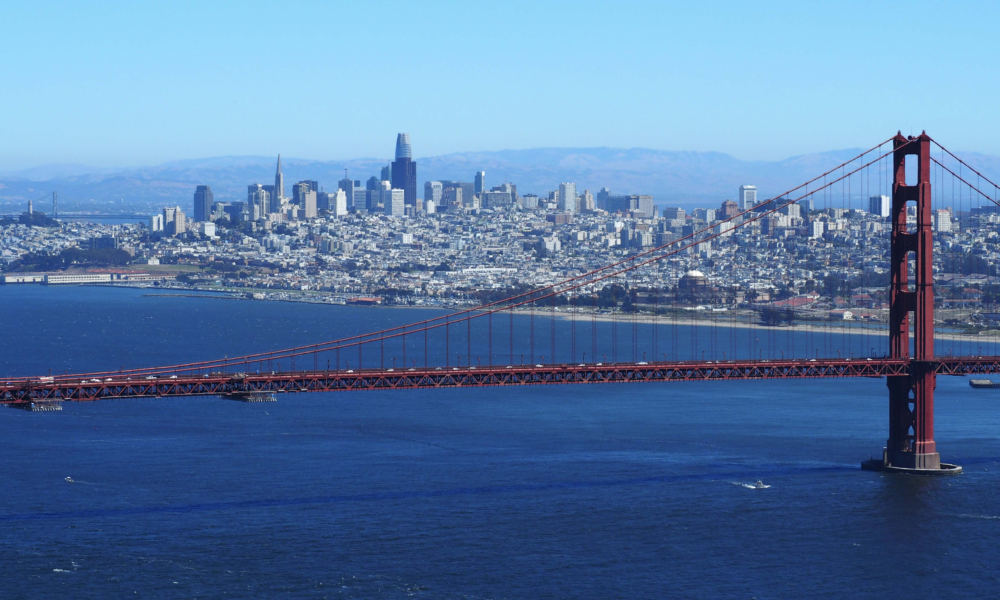
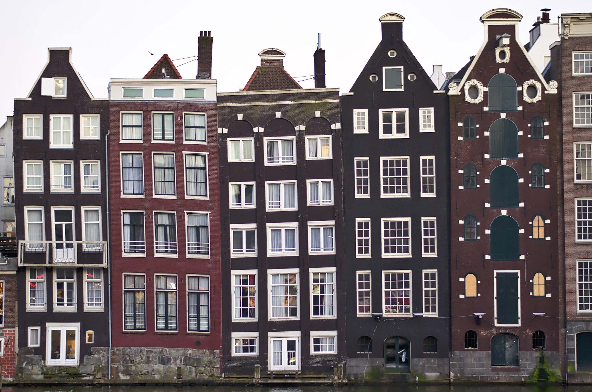

Click to see more photos!
A beautiful view of Bora Bora, French Polynesia
Trip 1: Bora Bora, French Polynesia
My girlfriend and I are planning an eventual trip to Bora Bora, which she has always dreamed of since she was a child. We are excited to see the crystal clear waters and the beautiful beaches, along with staying in a hut over the water. We are also excited to try the local cuisine and see the local wildlife including Blacktip Reef Sharks and Lemon Sharks. Learn more about Bora Bora!
Click to see more photos!
The Golden Gate Bridge overlooking San Fransisco.
Trip 2: San Fransisco, California (USA)
We are also planning a trip to San Fransisco where we would like to visit a number of museums, including the Exploratorium and the California Academy of Sciences. We are also excited to see the Golden Gate Bridge and Alcatraz Island, as well as the unique nightlife in the city. In addition, we would like to get tattoos done at one of the iconic tattoo parlors in San Fransisco, either Black Serum, Moth and Dagger, or Gold Leaf Ink. Learn more about San Fransisco!
Click to see more photos!
A row of adorable houses in Amsterdam, The Netherlands
Trip 3: Amsterdam, The Netherlands
The final trip on our current itinerary is the Netherlands, where my mom's side of the family originates. We would really like to visit the Rijksmuseum and Van Gogh Musuem to see some of the finest art from the 18th and 19th centuries, as well as go on a romantic canal cruise to see the various sights of the city. We would also like to Heineken Brewery and the Vondelpark, which is the largest park in Amsterdam with beautiful tulips of all colours. Learn more about Amsterdam!